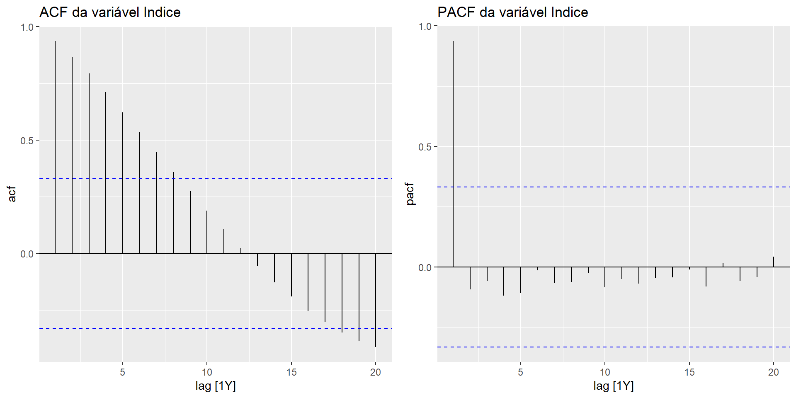
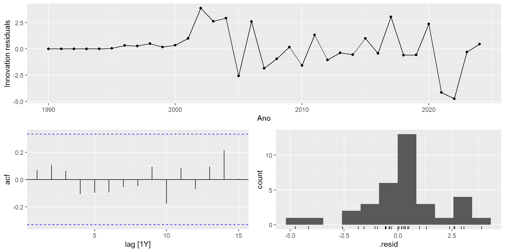

Introdução sobre a Série Temporal utilizada
O acesso à internet é um importante indicador do desenvolvimento tecnológico e econômico de um país, pois reflete o avanço da infraestrutura digital e a inclusão da população na sociedade da informação. Neste contexto, a série temporal de “percentual de indivíduos usuários de internet no Brasil” permite analisar tendências de longo prazo e os impactos das políticas de expansão digital ao longo das últimas três décadas.
Os dados correspondem ao percentual da população brasileira que utiliza a internet, coletados anualmente entre 1990 e 2024. A variável ITNETUSERP2BRA é fornecida pelo Banco Mundial e disponibilizada pelo FRED (Banco da Reserva Federal de St. Louis), representando uma medida padronizada para comparações internacionais.
ACF e PACF das series

A ACF mostra autocorrelações muito altas que decaem de forma lenta e gradual, o que é um sinal claro de forte tendência na série. Os valores passados continuam influenciando os valores futuros por muitos períodos.
A PACF apresenta um pico expressivo apenas no primeiro lag e cai logo após nos lags seguintes, indicando que a dependência temporal se concentra principalmente na observação imediatamente anterior. Esses dois padrões juntos são típicos de séries não estacionárias com tendência persistente.
Previsão utilizando o modelo ETS
Estimando os modelos ETS
# A mable: 1 x 5
SES HoltA HoltM HoltDampA HoltDampM
<model> <model> <model> <model> <model>
1 <ETS(A,N,N)> <ETS(A,A,N)> <ETS(M,A,N)> <ETS(A,Ad,N)> <ETS(M,Ad,N)>
Foi estimado um conjunto de 5 modelos ETS no conjunto de treino. Como a série é anual e não apresenta componente sazonal, todos os modelos têm sazonalidade ausente (N). A notação representa (erro, tendência, sazonalidade):
ETS(A,N,N) para o SES, sem tendência
ETS(A,A,N) para o Holt Aditivo, com tendência aditiva
ETS(M,A,N) para o Holt Multiplicativo, com tendência e erro multiplicativo
ETS(A,Ad,N) para o Holt Amortecido Aditivo, com tendência que desacelera e erro aditivo
ETS(M,Ad,N) para o Holt Amortecido Multiplicativo, com tendência que desacelera e erro multiplicativo
Medidas de avaliacao
Métricas de Avaliação — Modelos ETS
| HoltA |
2.0800 |
2.0956 |
2.0800 |
2.4667 |
2.4667 |
NaN |
NaN |
-0.5 |
| HoltDampA |
2.1484 |
2.1599 |
2.1484 |
2.5478 |
2.5478 |
NaN |
NaN |
-0.5 |
| HoltM |
-2.4109 |
2.7915 |
2.4109 |
-2.8566 |
2.8566 |
NaN |
NaN |
-0.5 |
| HoltDampM |
3.3126 |
3.3127 |
3.3126 |
3.9292 |
3.9292 |
NaN |
NaN |
-0.5 |
| SES |
3.7793 |
3.7825 |
3.7793 |
4.4824 |
4.4824 |
NaN |
NaN |
-0.5 |
# A mable: 1 x 1
HoltA
<model>
1 <ETS(A,A,N)>
A tabela de métricas permite comparar o desempenho dos modelos no período de teste. O HoltA apresentou o menor MAPE, indicando que foi o modelo que melhor representou o comportamento recente da série. Esse resultado mostra que a tendência aditiva utilizada pelo modelo foi adequada para acompanhar a evolução dos usuários de internet no Brasil.
Previsão utilizando modelos ARIMA
Estimando os modelos ARIMA
# A mable: 1 x 7
ARIMA120 ARIMA021 ARIMA121 ARIMA220 ARIMA022
<model> <model> <model> <model> <model>
1 <ARIMA(1,2,0)> <ARIMA(0,2,1)> <ARIMA(1,2,1)> <ARIMA(2,2,0)> <ARIMA(0,2,2)>
# ℹ 2 more variables: ARIMA222 <model>, AutoARIMA <model>
# A tibble: 7 × 4
.model AIC AICc BIC
<chr> <dbl> <dbl> <dbl>
1 ARIMA120 140. 141. 143.
2 ARIMA021 139. 139. 142.
3 ARIMA121 139. 140. 144.
4 ARIMA220 135. 136. 139.
5 ARIMA022 136. 137. 141.
6 ARIMA222 138. 141. 145.
7 AutoARIMA 141. 142. 146.
Foram estimados 7 modelos ARIMA no conjunto de treino. Entre os modelos avaliados, o ARIMA(2,2,0) apresentou os menores valores de AIC, AICc e BIC, indicando o melhor ajuste entre as alternativas consideradas. Como a série é anual, foram utilizados apenas modelos não sazonais, combinando diferentes ordens ARMA após a diferenciação. A busca automática também foi realizada por meio do AutoARIMA, servindo como uma alternativa para selecionar automaticamente as ordens do modelo.
Medidas de avaliação
Métricas de avaliação — Modelos ARIMA
| ARIMA220 |
-0.0668 |
0.2275 |
0.2175 |
-0.0797 |
0.2582 |
NaN |
NaN |
-0.5 |
| ARIMA021 |
0.6817 |
1.1101 |
0.8761 |
0.8105 |
1.0407 |
NaN |
NaN |
-0.5 |
| ARIMA121 |
1.5133 |
1.5593 |
1.5133 |
1.7958 |
1.7958 |
NaN |
NaN |
-0.5 |
| ARIMA222 |
1.9568 |
2.2002 |
1.9568 |
2.3188 |
2.3188 |
NaN |
NaN |
-0.5 |
| AutoARIMA |
3.9517 |
4.1777 |
3.9517 |
4.6844 |
4.6844 |
NaN |
NaN |
-0.5 |
| ARIMA022 |
4.3610 |
4.6039 |
4.3610 |
5.1695 |
5.1695 |
NaN |
NaN |
-0.5 |
| ARIMA120 |
4.3693 |
4.3794 |
4.3693 |
5.1820 |
5.1820 |
NaN |
NaN |
-0.5 |
Series: Indice
Model: ARIMA(2,2,0)
Coefficients:
ar1 ar2
-0.9227 -0.5594
s.e. 0.1668 0.1866
sigma^2 estimated as 3.417: log likelihood=-67.69
AIC=137.38 AICc=137.51 BIC=138.88

A tabela compara o desempenho dos modelos ARIMA no período de teste. O ARIMA(2,2,0) apresentou o melhor resultado, com o menor MAPE (0,2582%), além dos menores valores de RMSE (0,2275) e MAE (0,2175). Por isso, esse modelo foi escolhido e reajustado na série completa para realizar a previsão final.
Conclusão
Ao longo das últimas décadas, o acesso à internet no Brasil apresentou forte crescimento, passando de valores próximos de zero em 1990 para cerca de 84% da população em 2024. Nos anos mais recentes, esse crescimento mostrou uma desaceleração, indicando uma tendência de estabilização da série.
Na comparação dos modelos ETS, o HoltA apresentou o melhor desempenho no período de teste, com MAPE de 2,4667%, sendo escolhido para gerar as previsões dessa abordagem. Já entre os modelos ARIMA, após duas diferenciações, o ARIMA(2,2,0) apresentou os menores erros no período de teste, com MAPE de 0,2582%, além dos menores valores de RMSE e MAE. Na comparação final, o ARIMA(2,2,0) apresentou desempenho superior ao HoltA, com MAPE de 0,2582% contra 2,4667%. Dessa forma, o ARIMA(2,2,0) foi o modelo que apresentou melhor desempenho para a previsão da série de usuários de internet no Brasil.